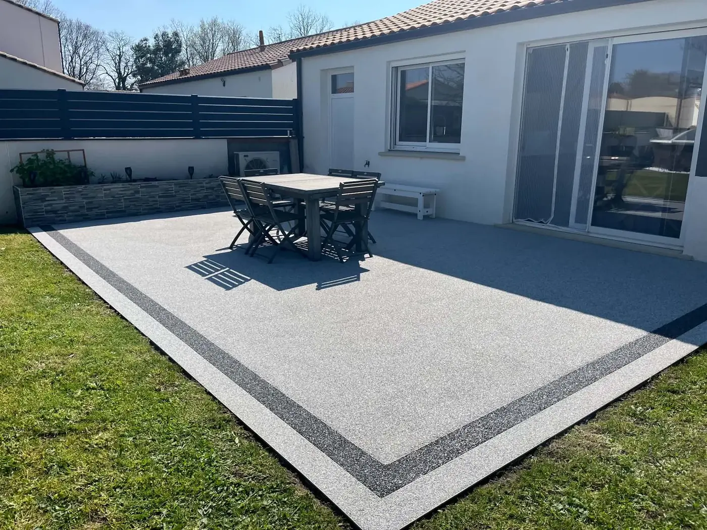
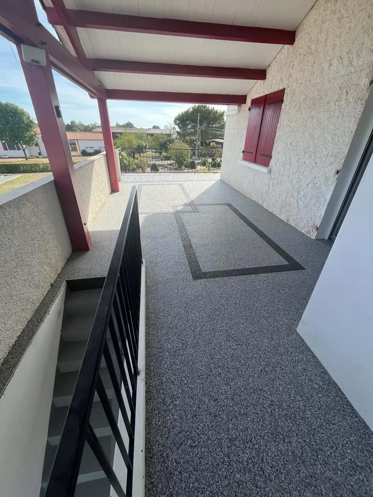
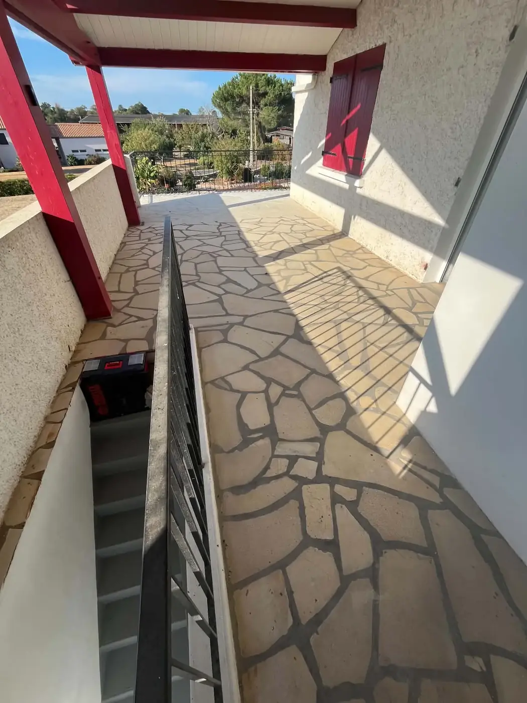
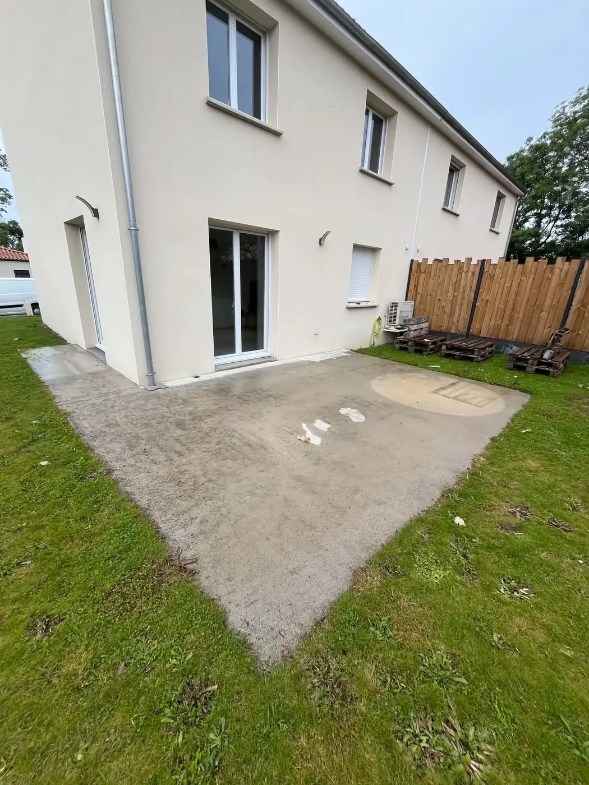
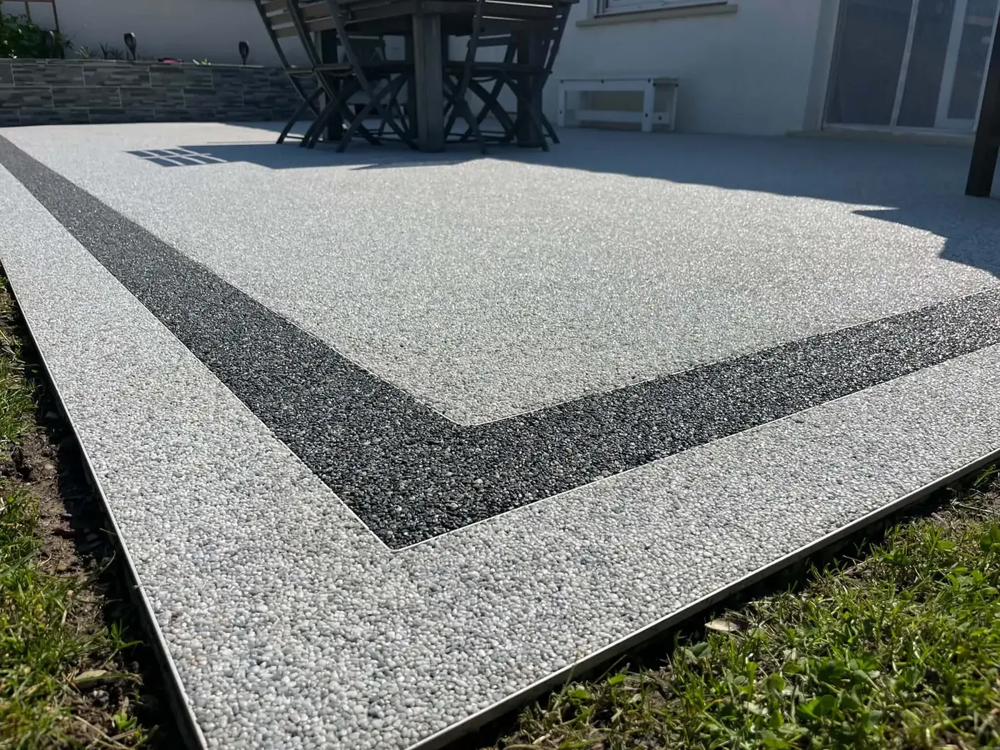

Accueil › Terrasse en moquette de pierre
Nos prestations
Terrasse en moquette de pierre près de Nantes
Une terrasse sans joints, agréable pieds nus et qui sèche vite après la pluie. La moquette de pierre se pose le plus souvent directement sur votre dalle béton ou votre ancien carrelage, sans gros travaux de démolition.

Pourquoi choisir la moquette de pierre pour votre terrasse
-
Drainante
L’eau s’infiltre à travers le revêtement : pas de flaques, la terrasse est vite sèche après une averse.
-
Antidérapante
Le grain de la pierre accroche sous le pied, même mouillé. Rassurant quand on a des enfants.
-
Rénove sans démolir
Pose possible sur une dalle béton ou un carrelage existant en bon état : moins de travaux, moins de poussière.
-
Personnalisable
Une vingtaine de coloris et des bandes décoratives pour dessiner un cadre ou souligner un contour.
-
Entretien simple
Pas de joints où poussent les mauvaises herbes : un balayage et un rinçage à l’eau suffisent la plupart du temps.
-
Agréable à vivre
Un toucher doux et un rendu naturel qui s’accordent avec la maison et le jardin.
Comment se passe la rénovation de votre terrasse
-
01
Visite et devis
Nous venons voir votre terrasse, contrôlons l’état du support et choisissons ensemble le coloris et les finitions.
-
02
Préparation du support
Nettoyage, reprise des fissures si nécessaire et application d’un primaire d’accrochage.
-
03
Pose
Les granulats de marbre sont mélangés à la résine puis étalés et lissés à la taloche, sur une épaisseur adaptée à l’usage.
-
04
Séchage et finitions
Contrôle des raccords et des bordures. Le temps de séchage dépend de la météo : nous vous indiquons le délai précis le jour de la pose.
Nos terrasses réalisées


Avant AprèsLa Planche
Une terrasse transformée sans démolition
L’ancienne terrasse a été recouverte directement de moquette de pierre. Faites glisser le curseur pour comparer l’avant et l’après.


Avant AprèsSaint-Léger-les-Vignes
Coloris Crème et bande orangée
Une ancienne dalle béton, grise et usée, transformée en terrasse lumineuse. La bande décorative aux tons orangés structure l’espace, avec une bordure nette côté pelouse.

La Planche
Gris clair encadré d’anthracite
Une grande terrasse gris clair entourée d’une bande gris anthracite qui dessine un cadre élégant. Un espace lumineux, parfait pour profiter des beaux jours.
Questions fréquentes sur les terrasses
Peut-on poser la moquette de pierre sur un ancien carrelage ?
Oui, si le carrelage est bien collé et en bon état. Il est nettoyé et préparé avec un primaire avant la pose.
La terrasse glisse-t-elle quand il pleut ?
Non : le grain de la pierre reste antidérapant, et l’eau traverse le revêtement au lieu de stagner en surface.
Combien de temps dure le chantier ?
Cela dépend de la surface et de l’état du support. Nous vous donnons la durée prévue dans le devis, ainsi que le délai à respecter avant de marcher sur la terrasse.
Comment l’entretenir ?
Un balayage et un rinçage au jet d’eau suffisent la plupart du temps. Évitez le nettoyeur haute pression utilisé trop près de la surface.
Un projet de terrasse ? Parlons-en.
Visite et devis gratuits. Nous étudions votre espace et vos envies afin de vous proposer une réalisation sur mesure.
Basés à La Planche, nous intervenons à Nantes et dans toute la Loire-Atlantique ainsi que dans le nord de la Vendée : Rezé, Vertou, Saint-Sébastien-sur-Loire, Bouguenais, Les Sorinières, Pont-Saint-Martin, Clisson, Pornic, Montaigu et leurs alentours.